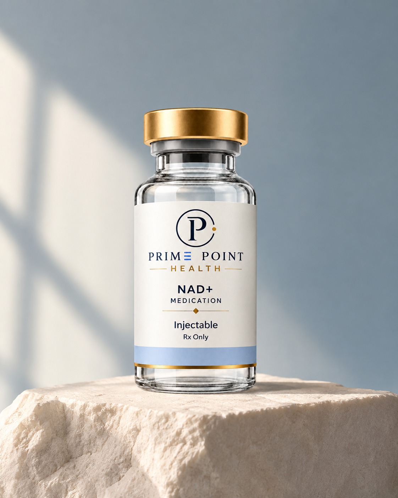

Cellular
energy
NAD+ helps cells turn nutrients into usable energy. By cycling between NAD+ and NADH, it carries electrons that help drive ATP production in mitochondria.

How NAD+ Works
NAD+ carries electrons from nutrients, helping cells turn those nutrients into energy they can use.
NAD+ picks up electrons as cells break down nutrients.
As NADH, it transfers those electrons in the mitochondria.
This transfer helps produce ATP, which powers cellular activity.
Product illustration. Actual packaging may vary.
Longevity
1000 mg/mL — 1 mL
$199/ month
NAD+ delivers fast-acting support for focus, clarity, and cellular vitality - anytime, anywhere.
Prescription only when clinically appropriate. Eligibility and results vary.
NAD+ stands for nicotinamide adenine dinucleotide. It is a coenzyme found in cells that participates in energy metabolism and serves as a substrate for enzymes involved in cellular maintenance.
The Electron Shuttle: NAD+ exists in two states. NAD+ is the active ("empty") form that accepts electrons from broken-down food. Once it captures those electrons, it turns into NADH (the "full" form). NADH delivers those electrons to the mitochondria (the cell's power plants). This triggers a chain reaction that produces ATP, the chemical energy your body uses to move, think, and live.
Cellular Energy: Helps mitochondria produce ATP, the primary energy currency of cells.
DNA Repair & Longevity: Fuels enzymes like PARPs to fix damaged DNA and sirtuins to regulate cellular stress.
Brain Health: Supports high-energy neurons, potentially improving focus, mental clarity, and memory protection.
Sleep & Circadian Rhythms: Assists in regulating the body's internal clock to support sleep quality.
NAD+ helps cells turn nutrients into usable energy. By cycling between NAD+ and NADH, it carries electrons that help drive ATP production in mitochondria.
NAD+ is used by enzymes called PARPs and sirtuins. These enzymes help cells respond to DNA damage and coordinate repair and cellular stress responses.
Supports high-energy neurons, potentially improving focus, mental clarity, and memory protection.

The Prime Point quality standard
Before medication reaches a Prime Point patient, it is supported by a layered quality process designed to verify what is inside, protect its purity, and hold every pharmacy partner to a consistently high standard.
Our pharmacy partners ensure that every batch has been thoroughly potency tested in accordance with FDA guidelines and USP 795 and USP 797.
We ensure our pharmacy partners test for sterility in accordance with USP <71>. This means incubating samples from every batch for at least 14 days. This ensures the samples show no growth of foreign microorganisms, including bacteria and other pathogens, before a passing result is reported.
We hold our pharmacy partners to strict standards for endotoxin testing. Every partner must show that endotoxin levels are well below the USP <85> limit for each medication tested.
Every medication is independently third-party tested, and every pharmacy is rigorously vetted before any partnership begins.
NAD+ is found in every cell of your body and plays an essential role in cellular energy production and maintenance. By cycling between NAD+ and NADH, it carries electrons that help cells turn nutrients into ATP, a primary source of cellular energy. NAD+ also supports enzymes involved in DNA repair and cellular stress responses.
Yes. Every Prime Point Health treatment plan is reviewed and guided by licensed, board-certified clinicians. You'll have access to expert care, ongoing monitoring, and the support you need to track your progress.
When prescribed as a subcutaneous injection, NAD+ is administered into the fatty tissue beneath the skin. It can also be administered via a prescribed nasal spray through the nasal lining. Follow the dose, route, and administration instructions provided by your licensed clinician and dispensing pharmacy.
Yes. All medications are sourced through FDA-registered, U.S.-based compounding pharmacies that follow applicable regulatory and safety requirements. FDA registration does not mean compounded medications are FDA-approved.
NAD (nicotinamide adenine dinucleotide) is a molecule found in every cell of your body. It helps turn food into energy and supports the normal function of your muscles, brain, and heart. NAD levels can decline with age, and healthy daily choices remain an important part of supporting cellular health.
No. Insurance is not required for NAD+. Prime Point Health accepts credit cards and offers pay-over-time plans for added flexibility.